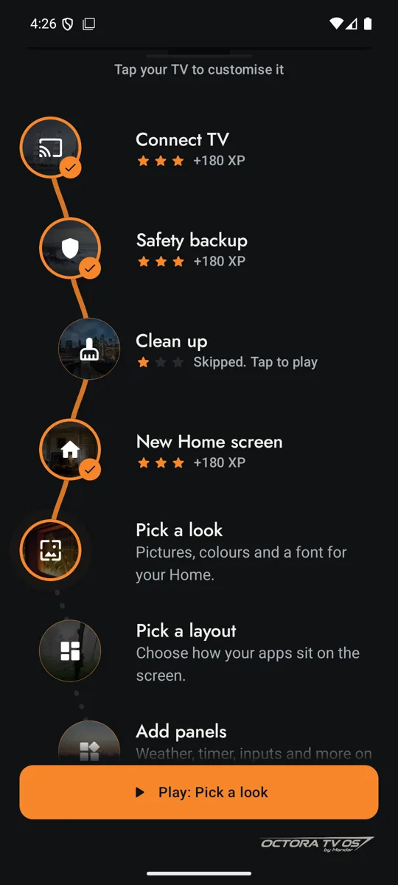
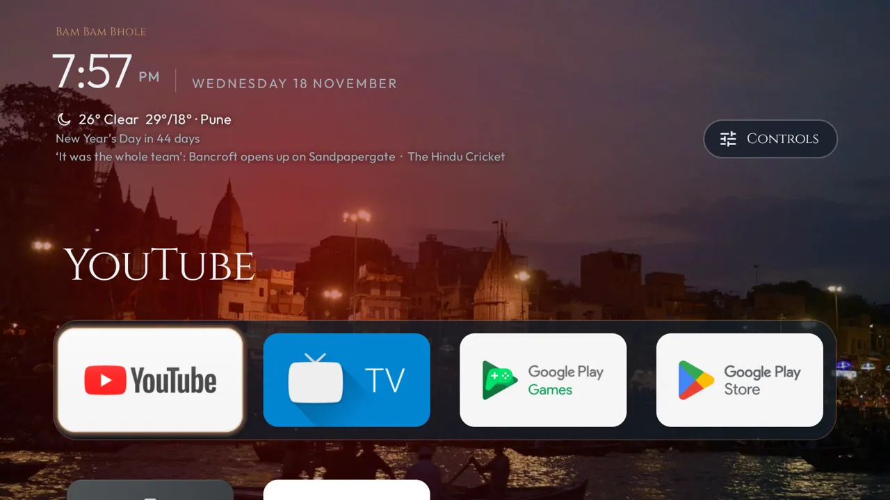
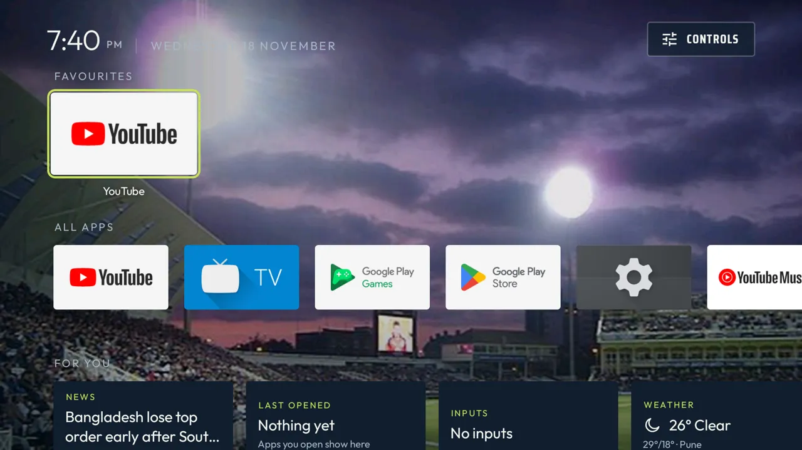
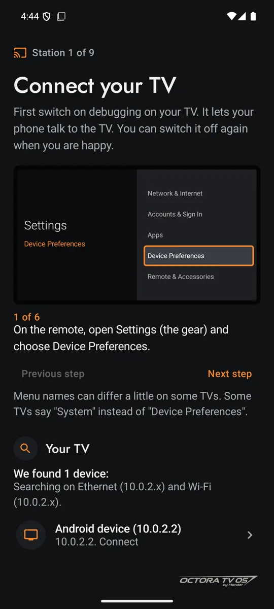
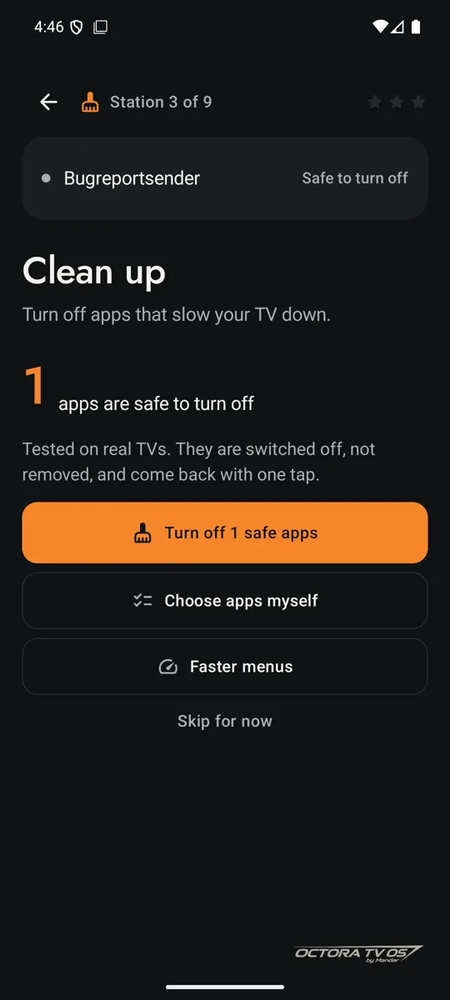
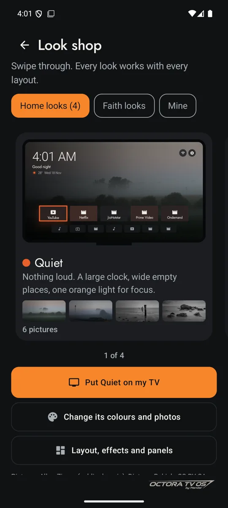
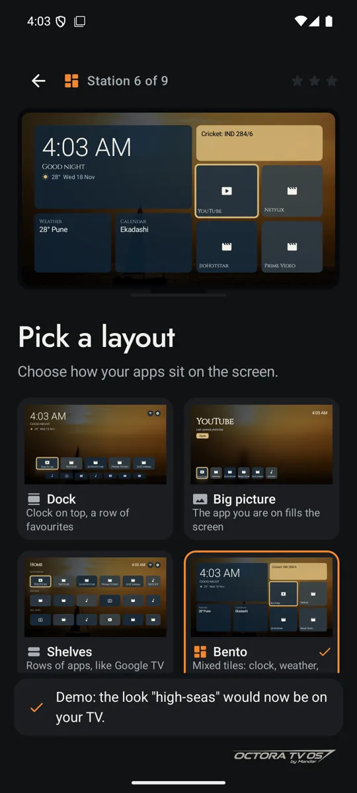

Designed and developed by Mandar Kadam · Free for Android TV and Google TV
Fix your TV from your phone.
Cleaning up a TV used to need a laptop, cables, technical know-how and someone standing in front of the screen. OCTORA puts that whole toolkit in your phone, so you can do it yourself at home in a few minutes.

Why we built it
We set up TVs for people, and kept hitting the same wall: we can't be in every home. So we packed the job into an app.
A PC and cables
Just your phone
The phone talks to the TV over your home Wi-Fi.
A tech expert
Simple steps
Nine short stations, one job each, in plain words.
Someone at the TV
From your sofa
Do it at home, whenever you want, as often as you like.
What it does
Clears the clutter
Switches off pre-installed apps that slow the TV and push adverts. Your own apps stay.
A faster, cleaner Home screen
Your favourite apps first, no sponsored rows.
Make it yours
14 original looks, 15 Faith looks, 8 layouts. Or share your own pictures to the app: one set all day or by time of day, a new one each time you come back to Home.
Kids mode
Only the apps you pick, with a PIN for settings.
Safety backup first
The app saves your TV's setup before it changes anything.
Restore everything
One button puts the TV back exactly as it was.






How to install
The app goes on your phone, not the TV. It is not on the Play Store, so Android asks you once to allow it.
Download the app
Tap Download for Android above. If Chrome warns about the file type, tap Download anyway.
Allow the install
Open the file. Android says installing unknown apps is blocked: tap Settings, switch on Allow from this source, go back, tap Install. If Play Protect asks, tap More details → Install anyway.
Turn on debugging on the TV
On the TV: Settings → Device Preferences → About → click Build 7 times. Then Developer options → switch on USB debugging (and Network debugging if you see it). The app shows each step with pictures.
Connect and play
Phone and TV on the same Wi-Fi. Open OCTORA, tap Start, and press Allow on the TV when it asks. You can switch debugging off again when you're done.
Questions
Is it safe? Can it break my TV?
OCTORA never roots the TV and never deletes system apps. It switches apps off (they can be switched back on), saves a backup before every change, and has a Restore everything button that puts the TV back as it was.
Which TVs does it work with?
Android TV and Google TV sets and boxes, such as Mi / Xiaomi, Redmi, Acer, Croma, Skyworth, TCL, Vu and others. Menu names differ a little between makers; the app tells you what to look for. It does not work on Samsung (Tizen), LG (webOS) or other non-Android TVs.
Why are there no character, movie or brand themes?
Those pictures belong to their owners, so we can't ship them in a public app. The app comes with its own original looks, and you can load your own pictures from your phone to build any look you like, for your own TV.
Why isn't it on the Play Store?
We release it directly so we can ship fixes quickly. The app checks for new versions itself and shows a Download button when one is ready. Every file is signed with the same key, and its SHA-256 checksum is published with each release.
Does it collect my data?
No account, no tracking, no ads. The app only talks to your TV on your home network, and asks GitHub whether a new version exists.
Instagram says it can't open the file
Instagram's built-in browser can't download apps. Tap the ⋮ or … menu at the top right and choose Open in browser (or Open in Chrome), then tap Download again.
Who made it
Mandar Kadam
Designer and developer of OCTORA TV OS · CTO, MeetYourReach & Pranav Wadkar Group
Mandar leads technology at MeetYourReach: platforms, automation, CRM and the systems behind a business. OCTORA started from setting up TVs for people by hand, with a laptop and cables, one home at a time. He designed and built the app so anyone can do the same job themselves from their phone.
"I believe technology should do more than solve immediate problems; it should create opportunities for what comes next."